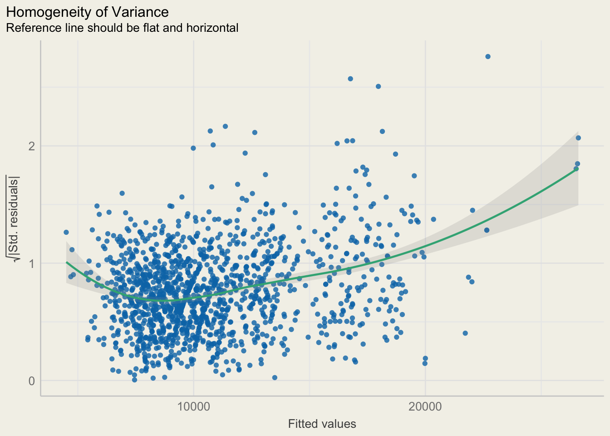
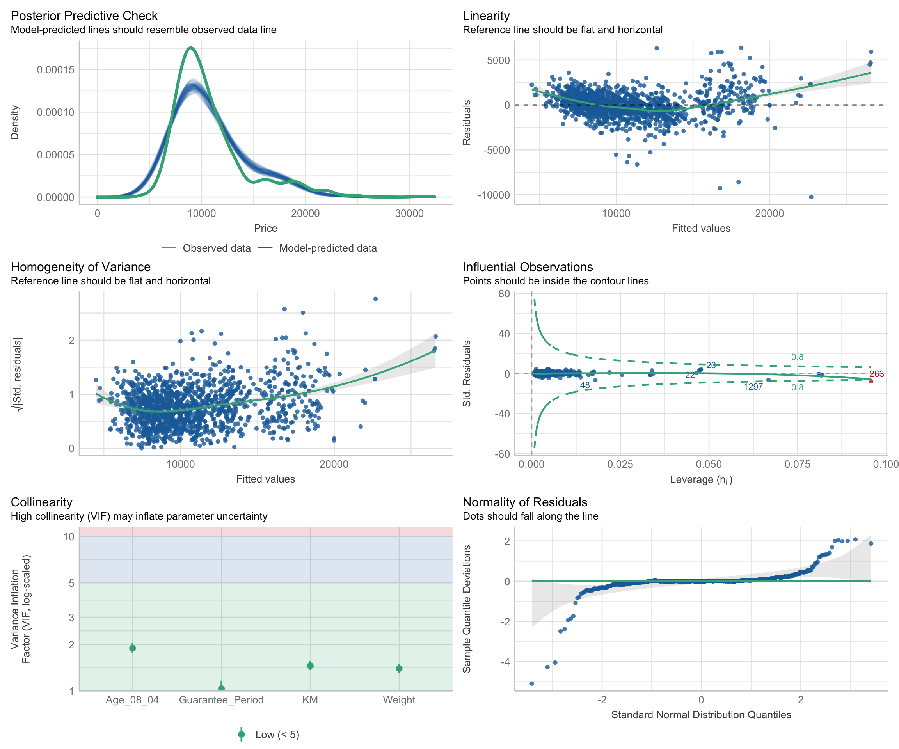

pacman::p_load(ggstatsplot, tidyverse, nortest)Hands-on Exercise 04.b
ggplot2
ggstatsplot
nortest
performance
parameters
see
Visual Statistical Analysis
1 Learning Outcome
In this exercise, we will gain hands-on expirience on using:
ggstatsplot package to create visual graphics with rich statistical information
performance package to visualise model diagnostics
parameters package to visualise model parameters
2 Getting Started
Use the pacman package p_load() to check, install and launch the following R packages:
| Library | Description |
|---|---|
| ggstatsplot | a ggplot2 extension for creating graphics with details from statistical tests included in the information-rich plots themselves. |
| tidyverse | a family of R packages for data processing |
| nortest | a package for normality test |
In this exercise, Exam_data.csv will be used. We use read_csv() of readr to import the data:
exam <- read_csv("data/Exam_data.csv")After importing the data, let’s examine it to understand its data structure:
The dataset contains 7 attributes and 322 observations with no missing values.
The categorical attributes are: ID, CLASS, GENDER and RACE.
The continuous attributes are: MATHS, ENGLISH and SCIENCE.
head(exam)# A tibble: 6 × 7
ID CLASS GENDER RACE ENGLISH MATHS SCIENCE
<chr> <chr> <chr> <chr> <dbl> <dbl> <dbl>
1 Student321 3I Male Malay 21 9 15
2 Student305 3I Female Malay 24 22 16
3 Student289 3H Male Chinese 26 16 16
4 Student227 3F Male Chinese 27 77 31
5 Student318 3I Male Malay 27 11 25
6 Student306 3I Female Malay 31 16 16str(exam)spc_tbl_ [322 × 7] (S3: spec_tbl_df/tbl_df/tbl/data.frame)
$ ID : chr [1:322] "Student321" "Student305" "Student289" "Student227" ...
$ CLASS : chr [1:322] "3I" "3I" "3H" "3F" ...
$ GENDER : chr [1:322] "Male" "Female" "Male" "Male" ...
$ RACE : chr [1:322] "Malay" "Malay" "Chinese" "Chinese" ...
$ ENGLISH: num [1:322] 21 24 26 27 27 31 31 31 33 34 ...
$ MATHS : num [1:322] 9 22 16 77 11 16 21 18 19 49 ...
$ SCIENCE: num [1:322] 15 16 16 31 25 16 25 27 15 37 ...
- attr(*, "spec")=
.. cols(
.. ID = col_character(),
.. CLASS = col_character(),
.. GENDER = col_character(),
.. RACE = col_character(),
.. ENGLISH = col_double(),
.. MATHS = col_double(),
.. SCIENCE = col_double()
.. )
- attr(*, "problems")=<externalptr> summary(exam) ID CLASS GENDER RACE
Length:322 Length:322 Length:322 Length:322
Class :character Class :character Class :character Class :character
Mode :character Mode :character Mode :character Mode :character
ENGLISH MATHS SCIENCE
Min. :21.00 Min. : 9.00 Min. :15.00
1st Qu.:59.00 1st Qu.:58.00 1st Qu.:49.25
Median :70.00 Median :74.00 Median :65.00
Mean :67.18 Mean :69.33 Mean :61.16
3rd Qu.:78.00 3rd Qu.:85.00 3rd Qu.:74.75
Max. :96.00 Max. :99.00 Max. :96.00 any(is.na(exam))[1] FALSEIn R, factors are used to handle categorical data and ordered variable. As there are categorical attributes in our dataset, we are going to convert their data type from <chr> to <fctr>:
col <- c("CLASS","GENDER","RACE")
exam <- exam %>% mutate(across(all_of(col), as.factor))After converting the attributes, let’s check the data again:
head(exam)# A tibble: 6 × 7
ID CLASS GENDER RACE ENGLISH MATHS SCIENCE
<chr> <fct> <fct> <fct> <dbl> <dbl> <dbl>
1 Student321 3I Male Malay 21 9 15
2 Student305 3I Female Malay 24 22 16
3 Student289 3H Male Chinese 26 16 16
4 Student227 3F Male Chinese 27 77 31
5 Student318 3I Male Malay 27 11 25
6 Student306 3I Female Malay 31 16 163 Statistics Test: ggstatsplot
3.1 One-sample test: gghistostats() method
In the code chunk below, gghistostats() of ggstatsplot is used to to build an visual of one-sample test on English scores.
- One-sample test is a statistical test used to determine whether the mean of a single sample is significantly different from a known or hypothesized population mean (mu=60).
Hypothesis
H0: Mean of English score = 60
H1: Mean of English score != 60
Conclusion
Since BF = e^-31.52, which is a tiny number close to 0. We have significant evidence to reject the null hypothesis and conclude that the mean English score doesn’t equal to 60.
Display Code
set.seed(1)
gghistostats(exam,
x = ENGLISH,
type = "bayes",
test.value = 60, #mu
xlab = "English scores",
bin.args = list(fill = "grey90", color="grey30"),
centrality.line.args = list(color = "black", linewidth = 1, linetype = "dashed"))+
theme(panel.background = element_rect(fill = "#f3f1e9"),
plot.background = element_rect(fill = "#f3f1e9",color = NA))gghistostats() includes below arguments:
| Argument | Description |
|---|---|
| binwidth | The width of the histogram bins. The default is to use the max(x) - min(x) / sqrt(N) |
| type | A character specifying the type of statistical approach and its hypothesis testing:
|
| test.value | A number indicating the true value of the mean (Default: 0). |
| bin.args | A list of additional aesthetic arguments to be passed to the stat_bin used to display the bins. |
| centrality.line.args | A list of additional aesthetic arguments to be passed to the ggplot2::geom_line() used to display the lines corresponding to the centrality parameter. |
3.1.1 Bayes Factor
A Bayes factor is the ratio of the likelihood of one particular hypothesis to the likelihood of another. It can be interpreted as a measure of the strength of evidence in favor of one theory among two competing theories.
That’s because the Bayes factor gives us a way to evaluate the data in favor of a null hypothesis, and to use external information to do so. It tells us what the weight of the evidence is in favor of a given hypothesis.
When we are comparing two hypotheses, H1 (the alternate hypothesis) and H0 (the null hypothesis), the Bayes Factor is often written as B10. It can be defined mathematically as
The Schwarz criterion is one of the easiest ways to calculate rough approximation of the Bayes Factor.
Bayes Factor can be any positive number:
One of the most common interpretations is this one—first proposed by Harold Jeffereys (1961) and slightly modified by Lee and Wagenmakers in 2013:
However, before one-sample testing, we should use Anderson-Darling normality test to check if English scores follow normal distribution:
Hypothesis
H0: English scores follow the normal distribution
H1: English scores don’t follow the normal distribution
alpha = 0.05
ad.test(exam$ENGLISH)
Anderson-Darling normality test
data: exam$ENGLISH
A = 4.3661, p-value = 7.341e-11Results from the Anderson-Darling normality test shows siginificant evidence (p-value <0.05) to reject the null hypothesis and conclude that the English scores do not follow normal distribution . Thus non parametric: One-sample Wilcoxon test is used in the following one-sample test model.
Hypothesis:
H0: Mean of English score = 60
H1: Mean of English score != 60
Alpha = 0.05
Conclusion
We reach the same conclusion using both approaches:
Since the p-value < 0.05, we have significant evidence to reject the null hypothesis and suggests that the mean English score is different from 60.
Display Code
set.seed(1)
gghistostats(exam,
x = ENGLISH,
type = "np",
test.value = 60, #mu
xlab = "English scores",
bin.args = list(fill = "grey90", color="grey30"),
centrality.line.args = list(color = "black", linewidth = 1, linetype = "dashed"))+
theme(panel.background = element_rect(fill = "#f3f1e9"),
plot.background = element_rect(fill = "#f3f1e9",color = NA))
3.2 Two-sample mean test: ggbetweenstats() method
ggbetweenstats() is used to build a visual for two-sample mean test of Maths scores by gender:
Before testing, we use Shapiro-Wilk normality test to check if math scores for both genders follow normal distribution:
Hypothesis
H0: Math scores for male / female follow the normal distribution
H1: Math scores for male / female don’t follow the normal distribution
alpha = 0.05
by(exam$MATHS, exam$GENDER, shapiro.test)exam$GENDER: Female
Shapiro-Wilk normality test
data: dd[x, ]
W = 0.92752, p-value = 1.604e-07
------------------------------------------------------------
exam$GENDER: Male
Shapiro-Wilk normality test
data: dd[x, ]
W = 0.91268, p-value = 6.269e-08Results from Shapiro-Wilk test shows significant evidence (p-value <0.05) to reject the null hypothesis and conclude that the math scores for both gender do not follow normal distribution . Thus non-parametric: Mann-Whitney U test is used in the following two-sample test model.
- non-parametric test use “median” value as parameter, while parametric test use “mean” value as parameter.
Hypothesis
H0: Mean math score for male = Mean math score for female
H1: Mean math score for male != Mean math score for female
alpha = 0.05
Conclusion
Since the p-value is > 0.05, we don’t have enough evidence to reject the null hypothesis and conclude that there is no statistically significant difference in the mean math scores between males and females.
Display Code
ggbetweenstats(
data = exam,
x = GENDER,
y = MATHS,
type = "np", #nonparametric
messages = FALSE)+
theme(panel.background = element_rect(fill = "#f3f1e9"),
plot.background = element_rect(fill = "#f3f1e9",color = NA))
ggbetweenstats() includes below arguments:
| Argument | Description |
|---|---|
| type | A character specifying the type of statistical approach and its hypothesis testing: No. of groups:
No. of groups > 2:
|
| pairwise.display (ANOVA) |
Decides which pairwise comparisons to display. Available options are:
|
| bf.message | It decides whether to display Bayes Factor in favor of the null hypothesis. This argument is relevant only for parametric test (Default: TRUE). |
| var.equal | whether to treat the two variances as being equal. If TRUE then the pooled variance is used to estimate the variance otherwise the Welch (or Satterthwaite) approximation to the degrees of freedom is used. |
| centrality.point.args, centrality.label.args | A list of additional aesthetic arguments to be passed to ggplot2::geom_point() andggrepel::geom_label_repel() geoms, which are involved in mean plotting. |
| point.args | A list of additional aesthetic arguments to be passed to the ggplot2::geom_point(). |
| boxplot.args | A list of additional aesthetic arguments passed on to ggplot2::geom_boxplot(). |
| violin.args | A list of additional aesthetic arguments to be passed to the ggplot2::geom_violin(). |
| ggsignif.args | A list of additional aesthetic arguments to be passed to ggsignif::geom_signif(). |
3.3 Oneway ANOVA Test: ggbetweenstats() method
ggbetweenstats() can also be used to build a visual for One-way ANOVA test on English score by race.
Before testing, we use Shapiro-Wilk normality test to check if math scores for both genders follow normal distribution:
Hypothesis
H0: English scores for races follow the normal distribution
H1: English scores for races don’t follow the normal distribution
alpha = 0.05
by(exam$ENGLISH, exam$RACE, shapiro.test)exam$RACE: Chinese
Shapiro-Wilk normality test
data: dd[x, ]
W = 0.93491, p-value = 1.305e-07
------------------------------------------------------------
exam$RACE: Indian
Shapiro-Wilk normality test
data: dd[x, ]
W = 0.9647, p-value = 0.8483
------------------------------------------------------------
exam$RACE: Malay
Shapiro-Wilk normality test
data: dd[x, ]
W = 0.96894, p-value = 0.01251
------------------------------------------------------------
exam$RACE: Others
Shapiro-Wilk normality test
data: dd[x, ]
W = 0.93378, p-value = 0.5182Results from Shapiro-Wilk test doesn’t show significant evidence (p-value >0.05) for all races and fail to reject the null hypothesis. Thus parametric test is used in the following onw-way ANOVA model.
Hypothesis
H0: There is no difference in English scores among races.
H1: There are differences in English scores among races.
alpha = 0.05
Conclusion
Since p-value < 0.05, we have enough evidence to reject the null hypothesis and conclude that there are differences in English scores among races.
The pairwise test ggbetweenstats() below further shows that the means of English scores of Chinese, Indian and Malay are significantly different.
Display Code
ggbetweenstats(
data = exam,
x = RACE,
y = ENGLISH,
type = "p", # parametric
mean.ci = TRUE,
pairwise.comparisons = TRUE,
pairwise.display = "s", # display only significant one
p.adjust.method = "fdr", # False Discovery Rate
messages = FALSE
)+
theme(panel.background = element_rect(fill = "#f3f1e9"),
plot.background = element_rect(fill = "#f3f1e9",color = NA))
3.4 Significant Test of Correlation: ggscatterstats()
In the code chunk below, ggscatterstats() is used to build a visual for Significant Test of Correlation between Maths scores and English scores.
Conclusion
The result indicates a statistically significant posistive relationship (r = 0.83, p-value <0.05) between English and math scores. This suggests that higher English scores are correlated with higher math scores.
ggscatterstats(data = exam,
x = MATHS,
y = ENGLISH,
marginal = FALSE,)+
theme(panel.background = element_rect(fill = "#f3f1e9"),
plot.background = element_rect(fill = "#f3f1e9",color = NA))3.5 Significant Test of Association (Depedence): ggbarstats() methods
In the code chunk below, the Maths scores is binned into a 4-class variable by using cut().
exam1 <- exam %>%
mutate(MATHS_bins=
cut(MATHS, breaks = c(0,60,75,85,100)))- (0,60] means excluding 0 and including 60.
head(exam1)# A tibble: 6 × 8
ID CLASS GENDER RACE ENGLISH MATHS SCIENCE MATHS_bins
<chr> <fct> <fct> <fct> <dbl> <dbl> <dbl> <fct>
1 Student321 3I Male Malay 21 9 15 (0,60]
2 Student305 3I Female Malay 24 22 16 (0,60]
3 Student289 3H Male Chinese 26 16 16 (0,60]
4 Student227 3F Male Chinese 27 77 31 (75,85]
5 Student318 3I Male Malay 27 11 25 (0,60]
6 Student306 3I Female Malay 31 16 16 (0,60] Since ggplot2 doesn’t provide mosaic plot, we can use ggbarstats() to create stacked bar chart to simulate it.
In this code chunk below ggbarstats() is used to build a visual for Significant Test of Association.
Hypothesis
H0: There is no association between math_bin and gender.
H1: There is an association between math_bin and gender.
Alpha = 0.05
Conclusion
Since the p-value is > 0.05, we don’t have enough evidence to reject the null hypothesis that there is no association between the math_bin and gender variables.
ggbarstats(exam1,
x = MATHS_bins,
y = GENDER)+
theme(legend.background = element_rect(fill = "#f3f1e9"),
panel.background = element_rect(fill = "#f3f1e9"),
plot.background = element_rect(fill = "#f3f1e9",color = NA
))4 Visualizing Models
In this section, Toyota Corolla case study will be used. We will learn how to visualize model diagnostic and model parameters by using parameters package.
4.1 Getting Started
Use the pacman package p_load() to check, install and launch the following R packages:
pacman::p_load(readxl, performance, parameters, see, qqplotr)| Library | Description |
|---|---|
| performance | This package provides tools to evaluate and check the performance of regression models |
| parameters | This package is used to extract and interpret parameters from regression models, e.g., coefficients, standard errors, p-values in an easy-to-interpret format |
| see & qqplotr | The see package is designed for visualizing the results of statistical models and model diagnostics. qqplotr(): Plots a QQ plot of the residuals to check for normality. |
In this exercise, Exam_data.csv will be used. We use read_csv() of readr to import the data:
car_resale <- read_xls("data/ToyotaCorolla.xls","data")After importing the data, let’s examine it to understand its data structure:
The dataset contains 38 attributes and 1,436 observations with no missing values.
head(car_resale)# A tibble: 6 × 38
Id Model Price Age_08_04 Mfg_Month Mfg_Year KM Quarterly_Tax Weight
<dbl> <chr> <dbl> <dbl> <dbl> <dbl> <dbl> <dbl> <dbl>
1 81 TOYOTA Co… 18950 25 8 2002 20019 100 1180
2 1 TOYOTA Co… 13500 23 10 2002 46986 210 1165
3 2 TOYOTA Co… 13750 23 10 2002 72937 210 1165
4 3 TOYOTA C… 13950 24 9 2002 41711 210 1165
5 4 TOYOTA Co… 14950 26 7 2002 48000 210 1165
6 5 TOYOTA Co… 13750 30 3 2002 38500 210 1170
# ℹ 29 more variables: Guarantee_Period <dbl>, HP_Bin <chr>, CC_bin <chr>,
# Doors <dbl>, Gears <dbl>, Cylinders <dbl>, Fuel_Type <chr>, Color <chr>,
# Met_Color <dbl>, Automatic <dbl>, Mfr_Guarantee <dbl>,
# BOVAG_Guarantee <dbl>, ABS <dbl>, Airbag_1 <dbl>, Airbag_2 <dbl>,
# Airco <dbl>, Automatic_airco <dbl>, Boardcomputer <dbl>, CD_Player <dbl>,
# Central_Lock <dbl>, Powered_Windows <dbl>, Power_Steering <dbl>,
# Radio <dbl>, Mistlamps <dbl>, Sport_Model <dbl>, Backseat_Divider <dbl>, …str(car_resale)tibble [1,436 × 38] (S3: tbl_df/tbl/data.frame)
$ Id : num [1:1436] 81 1 2 3 4 5 6 7 8 44 ...
$ Model : chr [1:1436] "TOYOTA Corolla 1.6 5drs 1 4/5-Doors" "TOYOTA Corolla 2.0 D4D HATCHB TERRA 2/3-Doors" "TOYOTA Corolla 2.0 D4D HATCHB TERRA 2/3-Doors" " TOYOTA Corolla 2.0 D4D HATCHB TERRA 2/3-Doors" ...
$ Price : num [1:1436] 18950 13500 13750 13950 14950 ...
$ Age_08_04 : num [1:1436] 25 23 23 24 26 30 32 27 30 27 ...
$ Mfg_Month : num [1:1436] 8 10 10 9 7 3 1 6 3 6 ...
$ Mfg_Year : num [1:1436] 2002 2002 2002 2002 2002 ...
$ KM : num [1:1436] 20019 46986 72937 41711 48000 ...
$ Quarterly_Tax : num [1:1436] 100 210 210 210 210 210 210 210 210 234 ...
$ Weight : num [1:1436] 1180 1165 1165 1165 1165 ...
$ Guarantee_Period: num [1:1436] 3 3 3 3 3 3 3 3 3 3 ...
$ HP_Bin : chr [1:1436] "100-120" "< 100" "< 100" "< 100" ...
$ CC_bin : chr [1:1436] "1600" ">1600" ">1600" ">1600" ...
$ Doors : num [1:1436] 5 3 3 3 3 3 3 3 3 5 ...
$ Gears : num [1:1436] 5 5 5 5 5 5 5 5 5 5 ...
$ Cylinders : num [1:1436] 4 4 4 4 4 4 4 4 4 4 ...
$ Fuel_Type : chr [1:1436] "Petrol" "Diesel" "Diesel" "Diesel" ...
$ Color : chr [1:1436] "Blue" "Blue" "Silver" "Blue" ...
$ Met_Color : num [1:1436] 1 1 1 1 0 0 0 1 1 0 ...
$ Automatic : num [1:1436] 1 0 0 0 0 0 0 0 0 0 ...
$ Mfr_Guarantee : num [1:1436] 0 0 0 1 1 1 0 0 1 1 ...
$ BOVAG_Guarantee : num [1:1436] 0 1 1 1 1 1 1 1 1 1 ...
$ ABS : num [1:1436] 1 1 1 1 1 1 1 1 1 1 ...
$ Airbag_1 : num [1:1436] 1 1 1 1 1 1 1 1 1 1 ...
$ Airbag_2 : num [1:1436] 1 1 1 1 1 1 1 1 1 1 ...
$ Airco : num [1:1436] 1 0 1 0 0 1 1 1 1 1 ...
$ Automatic_airco : num [1:1436] 1 0 0 0 0 0 0 0 0 0 ...
$ Boardcomputer : num [1:1436] 0 1 1 1 1 1 1 1 1 1 ...
$ CD_Player : num [1:1436] 1 0 1 0 0 0 0 0 1 0 ...
$ Central_Lock : num [1:1436] 1 1 1 0 0 1 1 1 1 1 ...
$ Powered_Windows : num [1:1436] 1 1 0 0 0 1 1 1 1 1 ...
$ Power_Steering : num [1:1436] 1 1 1 1 1 1 1 1 1 1 ...
$ Radio : num [1:1436] 0 0 0 0 0 0 0 0 0 0 ...
$ Mistlamps : num [1:1436] 0 0 0 0 0 1 1 0 0 0 ...
$ Sport_Model : num [1:1436] 0 0 0 0 0 0 0 1 0 1 ...
$ Backseat_Divider: num [1:1436] 0 1 1 1 1 1 1 1 1 1 ...
$ Metallic_Rim : num [1:1436] 0 0 0 0 0 0 0 0 0 0 ...
$ Radio_cassette : num [1:1436] 0 0 0 0 0 0 0 0 0 0 ...
$ Tow_Bar : num [1:1436] 0 0 0 0 0 0 0 0 0 0 ...any(is.na(car_resale))[1] FALSE4.2 Multiple Regression Model using lm()
The code chunk below is used to calibrate a multiple linear regression model by using lm() of Base Stats of R.
model <- lm(Price ~ Age_08_04 + Mfg_Year + KM +
Weight + Guarantee_Period,
data = car_resale)
model
Call:
lm(formula = Price ~ Age_08_04 + Mfg_Year + KM + Weight + Guarantee_Period,
data = car_resale)
Coefficients:
(Intercept) Age_08_04 Mfg_Year KM
-2.637e+06 -1.409e+01 1.315e+03 -2.323e-02
Weight Guarantee_Period
1.903e+01 2.770e+01 4.3 Model Diagnostic: checking for multicolinearity:
In the code chunk, check_collinearity() of performance package.
check_collinearity(model)# Check for Multicollinearity
Low Correlation
Term VIF VIF 95% CI Increased SE Tolerance Tolerance 95% CI
KM 1.46 [ 1.37, 1.57] 1.21 0.68 [0.64, 0.73]
Weight 1.41 [ 1.32, 1.51] 1.19 0.71 [0.66, 0.76]
Guarantee_Period 1.04 [ 1.01, 1.17] 1.02 0.97 [0.86, 0.99]
High Correlation
Term VIF VIF 95% CI Increased SE Tolerance Tolerance 95% CI
Age_08_04 31.07 [28.08, 34.38] 5.57 0.03 [0.03, 0.04]
Mfg_Year 31.16 [28.16, 34.48] 5.58 0.03 [0.03, 0.04]library(ggplot2)
check_c <-check_collinearity(model)
ggplot(check_c, aes(x = Term, y = VIF)) +
geom_col() +
coord_flip() +
theme_minimal()+
theme(legend.background = element_rect(fill = "#f3f1e9"),
panel.background = element_rect(fill = "#f3f1e9"),
plot.background = element_rect(fill = "#f3f1e9",color = NA
))check_c <- check_collinearity(model)
plot(check_c) # showing error
The plots above show high collinearity between Age and Mfg_Year. We should remove one of them.
4.4 Model Diagnostic: checking normality assumption
In the code chunk, check_normality() of performance package
model1 <- lm(Price ~ Age_08_04 + KM +
Weight + Guarantee_Period, data = car_resale)check_n <- check_normality(model1)
check_nWarning: Non-normality of residuals detected (p < .001).plot(check_n,type="qq")+
theme(legend.background = element_rect(fill = "#f3f1e9"),
panel.background = element_rect(fill = "#f3f1e9"),
plot.background = element_rect(fill = "#f3f1e9",color = NA
))The QQ-plot above shows the regression model does not follow a normal distribution. The data may have skewness, outliers or heteroscedasticity.
4.5 Model Diagnostic: Check model for homogeneity of variances
In the code chunk, check_heteroscedasticity() of performance package.
check_h <- check_heteroscedasticity(model1)
check_hWarning: Heteroscedasticity (non-constant error variance) detected (p < .001).plot(check_h)+
theme(legend.background = element_rect(fill = "#f3f1e9"),
panel.background = element_rect(fill = "#f3f1e9"),
plot.background = element_rect(fill = "#f3f1e9",color = NA
))
The plot and the check_heteroscedasticity(model1) result show the model having heteroscedasticity issue. It is possible the model is misspecified, such as not capturing the true relationship between the dependent and independent variables.
4.6 Model Diagnostic: Complete check
We can also perform the complete by using check_model().
check_model(model1)
4.7 Visualising Regression Parameters: see methods
In the code below, plot() of see package and parameters() of parameters package are used to visualise the parameters of a regression model.
plot(parameters(model1))+
theme(legend.background = element_rect(fill = "#f3f1e9"),
panel.background = element_rect(fill = "#f3f1e9"),
plot.background = element_rect(fill = "#f3f1e9",color = NA
))4.8 Visualising Regression Parameters: ggcoefstats() methods
In the code below, ggcoefstats() of ggstatsplot package to visualise the parameters of a regression model.
ggcoefstats(model1, output = "plot")5 Reference
- Kam, T.S. (2025). Visual Statistical Analysis.